WebMaps
Storymaps
Cartography
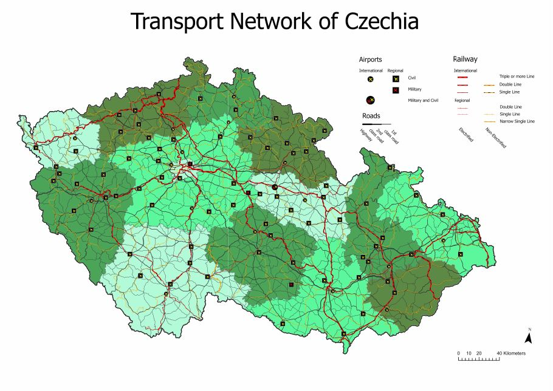
Transport Network of Czechia
Reference map of Czechia's road, rail, and airport network, redesigned with a refined color palette and simplified legend for the Thematic Cartography course.
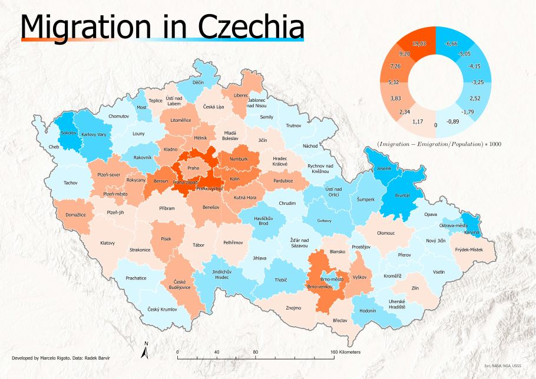
Migration in Czechia
Choropleth map of net migration rate by district, paired with a donut chart breaking down immigration versus emigration.
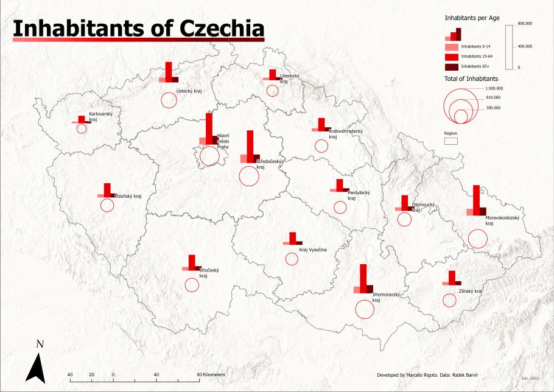
Inhabitants of Czechia
Graduated symbol map of population by region, split by age group (0-14, 15-64, 65+) using nested proportional bar symbols.
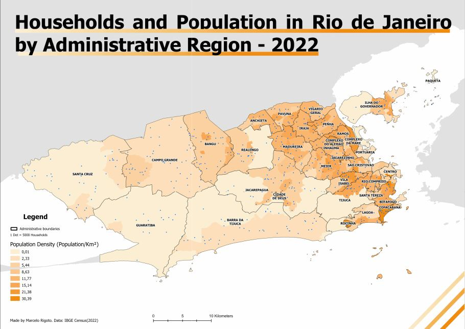
Households & Population in Rio
Dot density map of households by administrative region in Rio de Janeiro, built from 2022 IBGE Census data.
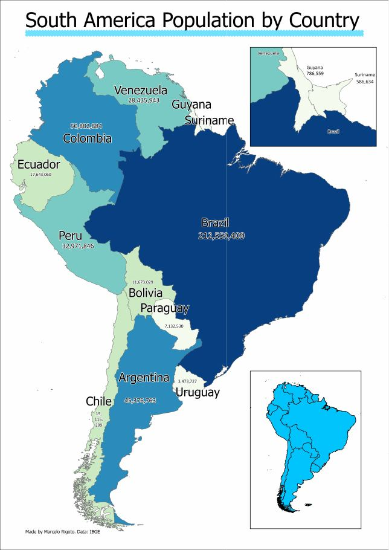
South America Population
Choropleth map of population by country across South America, with an inset detailing the smaller Guyana/Suriname territories.
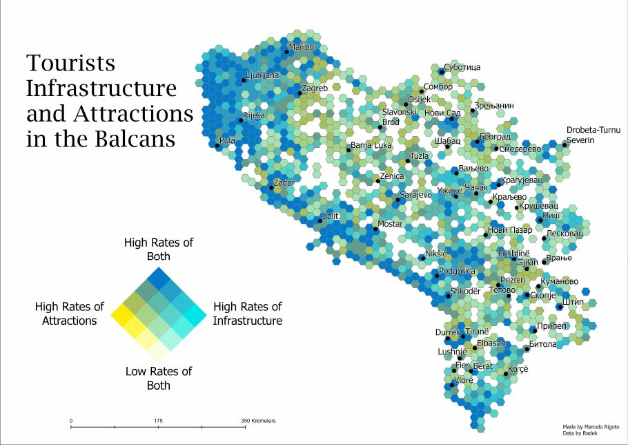
Tourist Potential in the Balkans
Bivariate hexbin map cross-referencing rates of tourist attractions against infrastructure availability across the Balkan Peninsula.
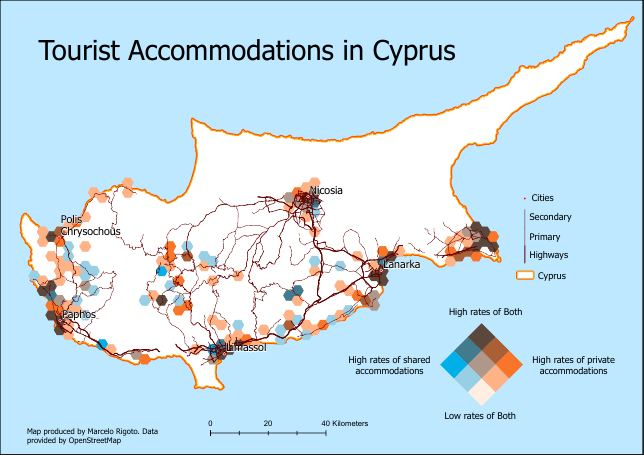
Tourist Accommodations in Cyprus
Bivariate hexbin map comparing rates of shared versus private tourist accommodations across Cyprus, built from OpenStreetMap data.
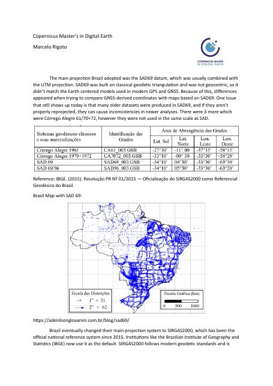
Map Projections & Datums of Brazil
Analysis of Brazil's transition from the local SAD69 datum to the geocentric SIRGAS2000 system, illustrated with geodetic distortion and station-displacement maps.
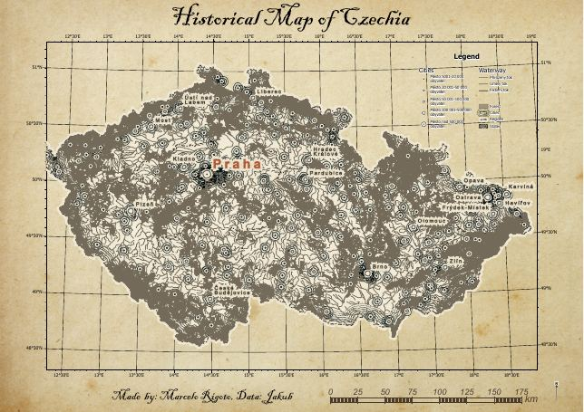
Historical Map of Czechia
A vintage-styled cartographic exercise rendering Czechia's terrain and settlements in an antique parchment aesthetic.
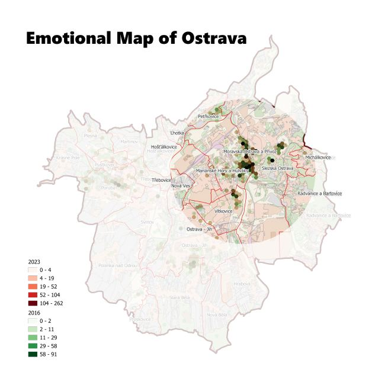
Emotional Map of Ostrava
Perception-mapping exercise visualizing how emotional responses to the city of Ostrava shifted between 2016 and 2023.
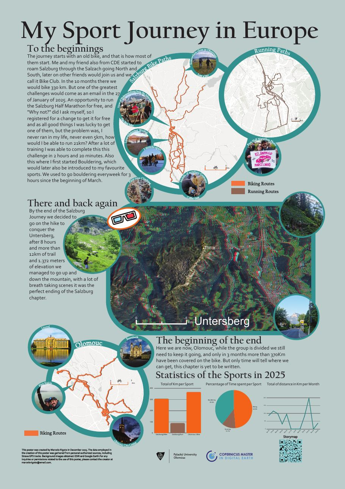
My Sport Journey in Europe
Final GeoVisualization course poster mapping a year of biking, running, and bouldering across Salzburg and Olomouc, built from personal Strava GPS data.
Remote Sensing
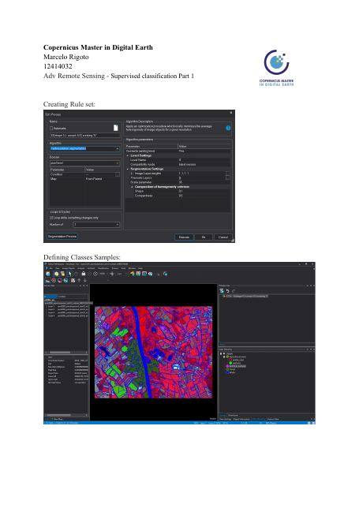
Supervised Classification — Part 1
Object-based image classification exercise for Advanced Remote Sensing: rule set definition and training sample selection in eCognition.
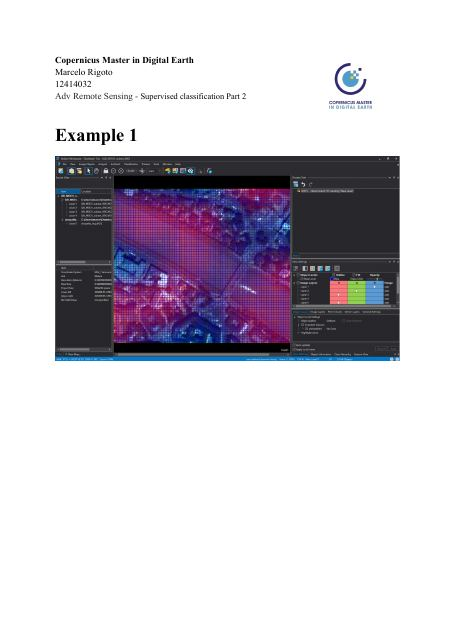
Supervised Classification — Part 2
Continuation of the object-based classification exercise, applying the workflow to further imagery examples and reviewing accuracy.
3D
Prague Transit 3D
Live 3D map of Prague's trams, metro, buses, and trains on a photorealistic city model, built with CesiumJS and the Golemio/PID real-time transit API.
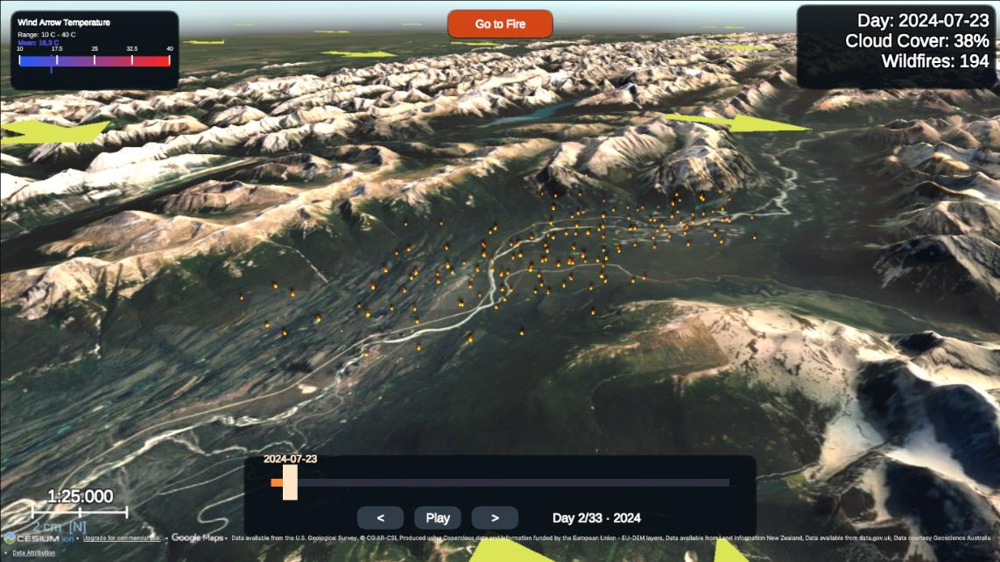
Wildfire 3D Visualization
Live WebGL demo from my master thesis — a day-by-day 3D reconstruction of the 2024 Jasper wildfire in Unity and Cesium, driven by NASA FIRMS satellite data.
MeinSalzburg
Team project for the WebGIS course — a 3D Leaflet/Mapbox urban toolkit for Salzburg with proximity search, walkability/bikeability analysis, and multi-stop route planning across city amenities.